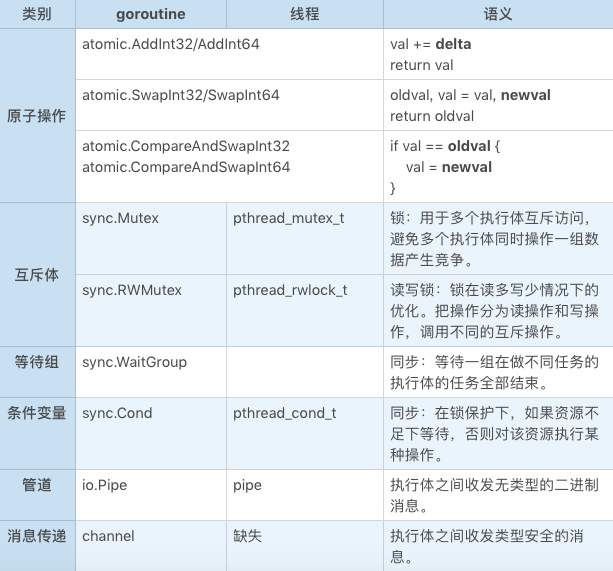

- 00 开篇词 怎样成长为优秀的软件架构师？.md.html
- 01 架构设计的宏观视角.md.html
- 02 大厦基石：无生有，有生万物.md.html
- 03 汇编：编程语言的诞生.md.html
- 04 编程语言的进化.md.html
- 05 思考题解读：如何实现可自我迭代的计算机？.md.html
- 06 操作系统进场.md.html
- 07 软件运行机制及内存管理.md.html
- 08 操作系统内核与编程接口.md.html
- 09 外存管理与文件系统.md.html
- 10 输入和输出设备：交互的演进.md.html
- 11 多任务：进程、线程与协程.md.html
- 12 进程内协同：同步、互斥与通讯.md.html
- 13 进程间的同步互斥、资源共享与通讯.md.html
- 14 IP 网络：连接世界的桥梁.md.html
- 15 可编程的互联网世界.md.html
- 16 安全管理：数字世界的守护.md.html
- 17 架构：需求分析 (上).md.html
- 18 架构：需求分析 (下) · 实战案例.md.html
- 19 基础平台篇：回顾与总结.md.html
- 20 桌面开发的宏观视角.md.html
- 21 图形界面程序的框架.md.html
- 22 桌面程序的架构建议.md.html
- 23 Web开发：浏览器、小程序与PWA.md.html
- 24 跨平台与 Web 开发的建议.md.html
- 25 桌面开发的未来.md.html
- 26 实战（一）：怎么设计一个“画图”程序？.md.html
- 27 实战（二）：怎么设计一个“画图”程序？.md.html
- 28 实战（三）：怎么设计一个“画图”程序？.md.html
- 29 实战（四）：怎么设计一个“画图”程序？.md.html
- 30 实战（五）：怎么设计一个“画图”程序？.md.html
- 31 辅助界面元素的架构设计.md.html
- 32 架构：系统的概要设计.md.html
- 33 桌面开发篇：回顾与总结.md.html
- 34 服务端开发的宏观视角.md.html
- 35 流量调度与负载均衡.md.html
- 36 业务状态与存储中间件.md.html
- 37 键值存储与数据库.md.html
- 38 文件系统与对象存储.md.html
- 39 存储与缓存.md.html
- 40 服务端的业务架构建议.md.html
- 41 实战（一）：“画图”程序后端实战.md.html
- 42 实战（二）：“画图”程序后端实战.md.html
- 43 实战（三）：“画图”程序后端实战.md.html
- 44 实战（四）：“画图”程序后端实战.md.html
- 45 架构：怎么做详细设计？.md.html
- 46 服务端开发篇：回顾与总结.md.html
- 47 服务治理的宏观视角.md.html
- 48 事务与工程：什么是工程师思维？.md.html
- 49 发布、升级与版本管理.md.html
- 50 日志、监控与报警.md.html
- 51 故障域与故障预案.md.html
- 52 故障排查与根因分析.md.html
- 53 过载保护与容量规划.md.html
- 54 业务的可支持性与持续运营.md.html
- 55 云计算、容器革命与服务端的未来.md.html
- 56 服务治理篇：回顾与总结.md.html
- 57 心性：架构师的修炼之道.md.html
- 58 如何判断架构设计的优劣？.md.html
- 59 少谈点框架，多谈点业务.md.html
- 60 架构分解：边界，不断重新审视边界.md.html
- 61 全局性功能的架构设计.md.html
- 62 重新认识开闭原则 (OCP).md.html
- 63 接口设计的准则.md.html
- 64 不断完善的架构范式.md.html
- 65 架构范式：文本处理.md.html
- 66 架构老化与重构.md.html
- 67 架构思维篇：回顾与总结.md.html
- 68 软件工程的宏观视角.md.html
- 69 团队的共识管理.md.html
- 70 怎么写设计文档？.md.html
- 71 如何阅读别人的代码？.md.html
- 72 发布单元与版本管理.md.html
- 73 软件质量管理：单元测试、持续构建与发布.md.html
- 74 开源、云服务与外包管理.md.html
- 75 软件版本迭代的规划.md.html
- 76 软件工程的未来.md.html
- 77 软件工程篇：回顾与总结.md.html
- 加餐 如何做HTTP服务的测试？.md.html
- 加餐 实战：“画图程序” 的整体架构.md.html
- 加餐 怎么保障发布的效率与质量？.md.html
- 热点观察 我看Facebook发币（上）：区块链、比特币与Libra币.md.html
- 热点观察 我看Facebook发币（下）：深入浅出理解 Libra 币.md.html
- 用户故事 站在更高的视角看架构.md.html
- 答疑解惑 想当架构师，我需要成为“全才”吗？.md.html
- 结束语 放下技术人的身段，用极限思维提升架构能力.md.html
- 课外阅读 从《孙子兵法》看底层的自然法则.md.html
- 捐赠
12 进程内协同：同步、互斥与通讯
你好，我是七牛云许式伟。
上一讲开始我们进入了多任务的世界，我们详细介绍了三类执行体：进程、线程和协程，并且介绍了每一种执行体的特点。
既然启动了多个执行体，它们就需要相互协同，今天我们先讨论进程内的执行体协同。
考虑到进程内的执行体有两类：用户态的协程（以 Go 语言的 goroutine 为代表）、操作系统的线程，我们对这两类执行体的协同机制做个概要。如下：

让我们逐一详细分析一下它们。
原子操作
首先让我们看一下原子操作。需要注意的是，原子操作是 CPU 提供的能力，与操作系统无关。这里列上只是为了让你能够看到进程内通讯的全貌。
顾名思义，原子操作的每一个操作都是原子的，不会中途被人打断，这个原子性是 CPU 保证的，与执行体的种类无关，无论 goroutine 还是操作系统线程都适用。
从语义上来说，原子操作可以用互斥体来实现，只不过原子操作要快得多。
例如：
var val int32
...
newval = atomic.AddInt32(&val, delta)
等价于：
var val int32
var mutex sync.Mutex
...
mutex.Lock()
val += delta
newval = val
mutex.Unlock()
执行体的互斥
互斥体也叫锁。锁用于多个执行体之间的互斥访问，避免多个执行体同时操作一组数据产生竞争。其使用界面上大概是这样的：
func (m *Mutex) Lock()
func (m *Mutex) Unlock()
锁的使用范式比较简单：在操作需要互斥的数据前，先调用 Lock，操作完成后就调用 Unlock。但总是存在一些不求甚解的人，对锁存在各种误解。
有的人会说锁很慢。甚至我曾看到有 Go 程序员用 channel 来模拟锁，理由就是锁太慢了，尽量不要用锁。产生“锁慢，channel 快”这种错觉的一个原因，可能是人们经常看到这样的忠告：
不要通过共享内存（锁）来通信，要通过通信（channel）来共享内存。
不明就里的人们看到这话后，可能就有了这样的印象：锁是坏的，锁是性能杀手，channel 是好的，是 Go 发明的先进武器，应该尽可能用 channel，而不要用锁。
快慢是相对而言的。锁的确会导致代码串行执行，所以在某段代码并发度非常高的情况下，串行执行的确会导致性能的显著降低。但平心而论，相比其他的进程内通讯的原语来说，锁并不慢。从进程内通讯来说，比锁快的东西，只有原子操作。
例如 channel，作为进程内执行体间传递数据的设施来说，它本身是共享变量，所以 channel 的每个操作必然是有锁的。事实上，channel 的每个操作都比较耗时。关于这一点，在下文解释 channel 背后的工作机理后，你就会清楚知道。
那么锁的问题在哪里？锁的最大问题在于不容易控制。锁 Lock 了但是忘记 Unlock 后是灾难性的，因为相当于服务器挂了，所有和该锁相关的代码都不能被执行。
比如：
mutex.Lock()
doSth()
mutex.Unlock()
在考虑异常的情况下，这段代码是不安全的，如果 doSth 抛出了异常，那么服务器就会出现问题。
为此 Go 语言还专门发明了一个 defer 语法来保证配对：
mutex.Lock()
defer mutex.Unlock()
doSth()
这样可以保证即使 doSth 发生异常，mutex.Unlock 仍然会被正确地执行。这类在异常情况下也能够正常工作的代码，我们称之为 “对异常安全的代码”。如果语言不支持 defer，而是支持 try .. catch，那么代码可能是这样的：
mutex.Lock()
try {
doSth()
} catch (e Exception) {
mutex.Unlock()
throw e
}
mutex.Unlock()
锁不容易控制的另一个表现是锁粒度的问题。例如上面 doSth 函数里面如果调用了网络 IO 请求，而网络 IO 请求在少数特殊情况下可能会出现慢请求，要好几秒才返回。那么这几秒对服务器来说就好像挂了，无法处理请求。
对服务器来说这是极为致命的。对后端程序员来说，有一句箴言要牢记：
不要在锁里面执行费时操作。
这里 “锁里面” 是指在mutex.Lock和mutex.Unlock之间的代码。
在锁的最佳编程实践中，如果明确一组数据的并发访问符合 “绝大部分情况下是读操作，少量情况有写操作” ，这种 “读多写少” 特征，那么应该用读写锁。
所谓读写锁，是把锁里面的操作分为读操作和写操作两种，对应调用不同的互斥操作。
如果是读操作，代码如下：
mutex.RLock()
defer mutex.RUnlock()
doReadOnlyThings
如果是锁里面是写操作，代码就和普通锁一样，如下：
mutex.Lock()
defer mutex.Unlock()
doWriteThings
为什么在 “读多写少” 的情况下，这样的使用范式能够优化性能？
因为从需求上来说，如果当前我们正在执行某个读操作，那么再来一个新的读操作，是不应该挡在外面的，大家都不修改数据，可以安全地并发执行。但如果来的是写操作，就应该挡在外面，等待读操作执行完。整体来说，读写锁的特性就是：
读操作不阻止读操作，阻止写操作；- 写操作阻止一切，不管读操作还是写操作。
执行体的同步
聊完了执行体的互斥，我们再来看下执行体之间的同步。
同步的一个最常见的场景是：把一个大任务分解为n个小任务，分配给n个执行体并行去做，等待它们一起做完。这种同步机制我们叫 “等待组”。
其使用界面上大概是这样的：
func (wg *WaitGroup) Add(n int)
func (wg *WaitGroup) Done()
func (wg *WaitGroup) Wait()
用法上大概是这样的：
var wg WaitGroup
...
wg.Add(n)
for 循环n次 {
go func() {
defer wg.Done()
doTaski // 执行第i个任务
}()
}
wg.Wait()
简而言之，在每个任务开始的时候调用 wg.Add(1)，结束的时候调用 wg.Done()，然后在主执行体调用 wg.Wait() 等待这些任务结束。
需要注意的是，wg.Add(1) 是要在任务的 goroutine 还没有开始就先调用，否则可能出现某个任务还没有开始执行就被认为结束了。
条件变量（Condition Variable）是一个更通用的同步原语，设计精巧又极为强大。强大到什么程度？像 channel 这样的通讯机制都可以用它来实现。
条件变量的使用界面上大概是这样的：
func NewCond(l Locker) *Cond
func (c *Cond) Broadcast()
func (c *Cond) Signal()
func (c *Cond) Wait()
那么，怎么用条件变量？
我们先看下初始化。条件变量初始化的时候需要传入一个互斥体，它可以是普通锁（Mutex)，也可以是读写锁（RWMutex）。如下：
var mutex sync.Mutex // 也可以是 sync.RWMutex
var cond = sync.NewCond(&mutex)
...
为什么创建条件变量需要传入锁？因为 cond.Wait() 的需要。Wait 内部实现逻辑是：
把自己加入到挂起队列
mutex.Unlock()
等待被唤醒 // 挂起的执行体会被后续的 cond.Broadcast 或 cond.Signal() 唤醒
mutex.Lock()
初始化了条件变量后，我们再来看看它的使用方式。条件变量的用法有一个标准化的模板，看起来大概是这样的：
mutex.Lock()
defer mutex.Unlock()
for conditionNotMetToDo {
cond.Wait()
}
doSomething
if conditionNeedNotify {
cond.Broadcast()
// 有时可以优化为 cond.Signal()
}
看起来有些复杂，让我们来解释一下。加锁后，先用一个 for 循环判断当前是否能够做我们想做的事情，如果做不了就调用 cond.Wait() 进行等待。
这里很重要的一个细节是注意用的是 for 循环，而不是 if 语句。这是因为 cond.Wait() 得到了执行权后不代表我们想做的事情就一定能够干了，所以要再重新判断一次条件是否满足。
确定能够做事情了，于是 doSomething。在做的过程中间，如果我们判断可能挂起队列中的部分执行体满足了重新执行的条件，就用 cond.Broadcast 或 cond.Signal 唤醒它们。
cond.Broadcast 比较粗暴，它唤醒了所有在这个条件变量挂起的执行体，而 cond.Signal 则只唤醒其中的一个。
什么情况下应该用 cond.Broadcast，什么情况下应该用 cond.Signal？最偷懒的方式当然是不管三七二十一，用 cond.Broadcast 一定没问题。但是本着经济的角度，我们还是要交代清楚 cond.Signal 的适用范围：
- 挂起在这个条件变量上的执行体，它们等待的条件是一致的；
- 本次 doSomething 操作完成后，所释放的资源只够一个执行体来做事情。
Cond 原语虽然叫条件变量，但是实际上它既没有明白说变量具体是什么样的，也没有说条件具体是什么样的。变量是指 “一组要在多个执行体之间协同的数据”。条件是指做任务前 Wait 的 “前置条件”，和做任务时需要唤醒其它人的 “唤醒条件”。
这样的介绍相当的抽象。我们拿 Go 语言的 channel 开刀，自己实现一个。代码如下：
type Channel struct {
mutex sync.Mutex
cond *sync.Cond
queue *Queue
n int
}
func NewChannel(n int) *Channel {
if n < 1 {
panic("todo: support unbuffered channel")
}
c := new(Channel)
c.cond = sync.NewCond(&c.mutex)
c.queue = NewQueue()
// 这里 NewQueue 得到一个普通的队列
// 代码从略
c.n = n
return c
}
func (c *Channel) Push(v interface{}) {
c.mutex.Lock()
defer c.mutex.Unlock()
for c.queue.Len() == c.n { // 等待队列不满
c.cond.Wait()
}
if c.queue.Len() == 0 { // 原来队列是空的，可能有人等待数据，通知它们
c.cond.Broadcast()
}
c.queue.Push(v)
}
func (c *Channel) Pop() (v interface{}) {
c.mutex.Lock()
defer c.mutex.Unlock()
for c.queue.Len() == 0 { // 等待队列不空
c.cond.Wait()
}
if c.queue.Len() == c.n { // 原来队列是满的，可能有人等着写数据，通知它们
c.cond.Broadcast()
}
return c.queue.Pop()
}
func (c *Channel) TryPop() (v interface{}, ok bool) {
c.mutex.Lock()
defer c.mutex.Unlock()
if c.queue.Len() == 0 { // 如果队列为空，直接返回
return
}
if c.queue.Len() == c.n { // 原来队列是满的，可能有人等着写数据，通知它们
c.cond.Broadcast()
}
return c.queue.Pop(), true
}
func (c *Channel) TryPush(v interface{}) (ok bool) {
c.mutex.Lock()
defer c.mutex.Unlock()
if c.queue.Len() == c.n { // 如果队列满，直接返回
return
}
if c.queue.Len() == 0 { // 原来队列是空的，可能有人等待数据，通知它们
c.cond.Broadcast()
}
c.queue.Push(v)
return true
}
对着这个 Channel 的实现，你是否对条件变量有感觉很多？顺便提醒一点，这个 Channel 的实现不支持无缓冲 channel，也就是不支持 NewChannel(0) 的情况。如果你感兴趣，可以改改这个问题。
执行体的通讯
聊完同步与互斥，我们接着聊执行体的通讯：怎么在执行体间收发消息。
管道是大家都很熟知的执行体间的通讯机制。规格如下：
func Pipe() (pr *PipeReader, pw PipeWriter)
用法上，先调用pr, pw := io.Pipe()得到管道的写入端和读出端，分别传给两个并行执行的 goroutine（其他语言也类似），然后一个 goroutine 读，一个 goroutine 写就好了。
管道用处很多。一个比较常见的用法是做读写转换，例如，假设我手头有一个算法：
func Foo(w io.Writer) error
这个算法生成的数据流，需要作为另一个函数的输入，但是这个函数的输入是 io.Reader，原型如下：
func Bar(r io.Reader)
那么怎么把它们串起来呢？用管道我们很容易实现这样的变换：
func FooReader() io.ReadCloser {
pr, pw := io.Pipe()
go func() {
err := Foo(pw)
pw.CloseWithError(err)
}()
return pr
}
这个 FooReader 函数几句话就把 Foo 变成了一个符合 io.Reader 接口的对象，它就可以很方便的和 Bar 函数结合了。
其实 Go 语言中引入的 channel 也是管道，只不过它是类型安全的管道。具体用法如下：
c := make(chan Type, n) // 创建一个能够传递 Type 类型数据的管道，缓冲大小为 n
...
go func() {
val := <-c // 从管道读入
}()
...
go func() {
c <- val // 向管道写入
}()
我们后面在 “服务端开发” 一章，我们还会比较详细讨论 channel，今天先了解一个大体的语义。
结语
总结一下，我们今天主要聊了执行体间的协同机制：原子操作、同步、互斥与通讯。我们重点聊了锁和同步原语 “条件变量”。
锁在一些人心中是有误解的，但实际上锁在服务端编程中的比重并不低，我们可能经常需要和它打交道，建议多花精力理解它们。
条件变量是最复杂的同步原语，功能强大。虽然平常我们直接使用条件变量的机会不是太多，大部分常见的场景往往有更高阶的原语（例如 channel）可以取代。但是它的设计精巧而高效，值得细细体会。
你会发现，操作系统课本上的信号量这样的同步原语，我们这里没有交代，这是因为它被更强大而且性能更好的同步原语 “条件变量” 所取代了。
上面我们为了介绍条件变量的用法，我们实作了一个 channel，你也可以考虑用信号量这样的东西来实现一遍，然后分析一下为什么我们说基于 “条件变量” 的版本是更优的。
如果你对今天的内容有什么思考与解读，欢迎给我留言，我们一起讨论。在下期，我们将讨论进程与进程之间的协同：进程间的同步互斥、资源共享与通讯。
如果你觉得有所收获，也欢迎把文章分享给你的朋友。感谢你的收听，我们下期再见。
© 2019 - 2023 Liangliang Lee. Powered by gin and hexo-theme-book.